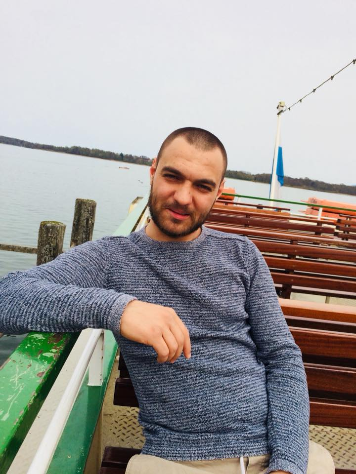

<section #about>
    <div class="title">
        <span>ABOUT</span>
        <div class="underline"></div>
    </div>
    <div class="img-mask">
        <svg width="0" height="0">
            <defs>
                <clipPath id="hexagonImg">
                    <!-- for width = 300px and height = 300 / 2 * 1.7321 (square root of 3)-->
                    <polygon points="0,129.9 75,259.81 225,259.81 300,129.9 225,0 75,0"></polygon>
                </clipPath>
            </defs>
        </svg>
        
    </div>
    <div *ngFor="let paragraph of paragraphs" class="text-mask">
        <svg width="0" height="0" viewBox="0 0 1 1">
            <clipPath id="hexagonText" clipPathUnits="objectBoundingBox">
                <polygon points="0 0.5, 0.05 1, 0.95 1, 1 0.5, 0.95 0, 0.05 0"></polygon>
            </clipPath>
        </svg>
        <!--<p>{{paragraph}}</p>-->
    </div>

    <!--<div>
        Hi, my Name is Mihai. I'm 30 years old and i was born Brasov, Romania.

       I graduated in a technological high school as a computing technician Operator.

        Back in 2010, after school, i traveled to my mother in Germany. She lives in <b>Rosenheim, Bavaria</b>. There I follow a Curse
        on German Language for Immigrants working beside a Restaurant as a Dishwasher.

        After graduating the Language Curse with a B1 Degree in 2011, I started working at a Factory,
        operating CNC cutting machines.

        At this point I've started to self educate myself on programming computers. Started by following tutorials on
        the internet and reading books.

        The most used source of learning was the cprogramming.com website. And the book Jumping into C++ by Alex Allain.

        After finishing the book I started to learn graphics programming following the tutorials on learnopengl.com
        website.

        There I come across the Khan Academy Platform. A free online education program. Where I start learning
        Mathematics, Computer Science and Computer Programming.

        In March 2015 my daughter was born, and later that year I graduated my professional training as a
        Machine and Production Facility Operator. From there on I worked as a driver on a Forklift truck until today.

        At mid of this year I was recruited by the Developer Akademie Team. They trained me to become a Front-end
        Developer. Here I learn to build websites through intensive coaching, online seminars, video conferences.

        Today I learned to develop websites using the Angular web platform framework.

        Besides programming, I am also interested in social and economic movements. In particular The Venus Project
        Organisation.

    </div>-->
</section>